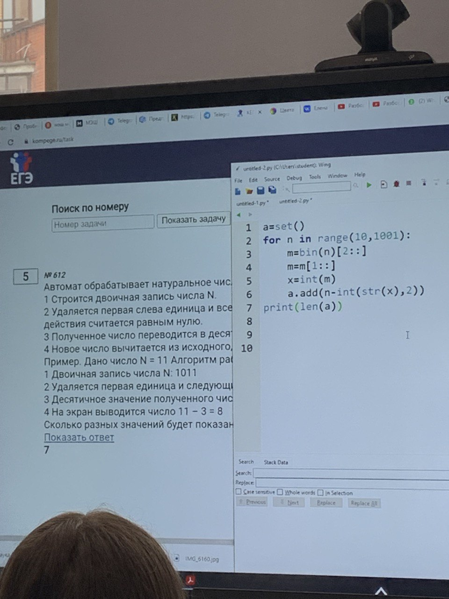
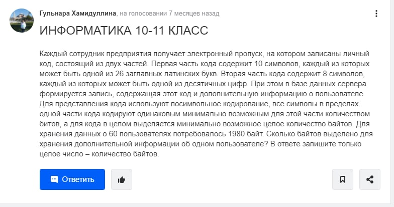
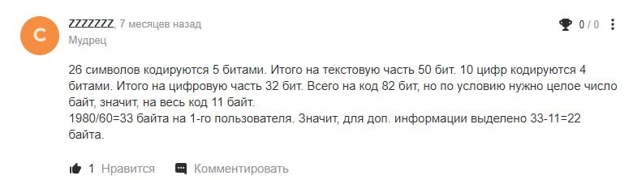
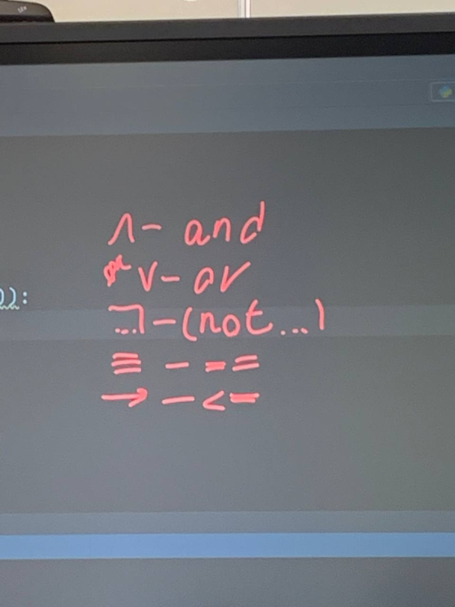

Шаблоны mcko
ответы:
ты дурак
#1 1.1
for a in range(1, 40):
for b in range(1, 40):
for c in range(1, 40):
s = '0' + a*'1' + b*'2' + c*'3'+'0'
while not '00' in s:
s = s.replace('01','210',1)
s = s.replace('02','3101',1)
s = s.replace('03','2012',1)
if s.count('1') == 60 and s.count('2') == 50 and s.count('3') == 18:
print(a, b, c)
#1 1.2
s='7'*2022
while '777' in s or '333' in s:
s=s.replace('777', '3', 1)
s=s.replace('333', '7', 1)
print(s)
#2
print('x y w z')
for x in range(2):
for y in range(2):
for w in range(2):
for z in range(2):
if ((x<=y) and ((not x)<=(not z)) or w)==0:
print(x, y, w, z)
#4

#5
for i in range(1, 1000):
s=i
n=200
while s>0:
s=s//4
n=n-6
if n==170:
print(i)
#6
1. тестовый файл:
I=k*i
N=2**i
2. графический файл:
I=k*i
K=m*n
N=2**i
3. звуковой файл:
I=a*i*D*t
D-частота дискритизации
4. пропускная способность:
V=I/t
#9


#10
x=
s=''
while x>0:
s=str(x%4)+s
x=x//4
print(s.count('3'))
#11
def f(x, y):
if x==y:
return 1
if x>y or x==15:
return 0
if x меньше (то есть галка, бокальчик вправо) y:
return f(x+1, y)+f(x*2, y)
print(f(1,16))
#12
for i in range(1, 1000):
x=i
l=0
m=0
while x>0:
l=l+1
if m<(x%8):
m=x%8
x=x//8
if l==4 and m==7:
print(i)
#13
for a in range(1, 10000):
flag=True
for x in range(1, 10000):
if ((x%54!=0 or x%80!=0)<=(x%a!=0))==0:
flag=False
if flag:
print(a)
#14
f=open('')
a=[]
b=[]
for i in f:
a.append(int(i))
for i in range(len(a)-1):
if a[i]%4==0 and a[i+1]%4==0:
b.append(a[i]+a[i+1])
print(len(b), max(b))
